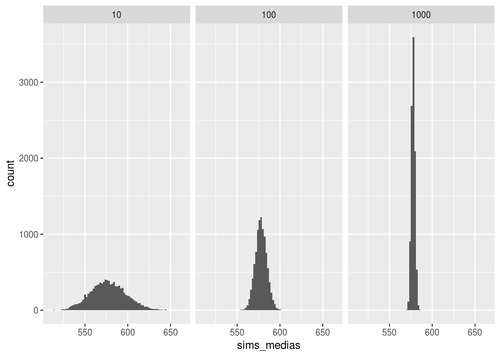
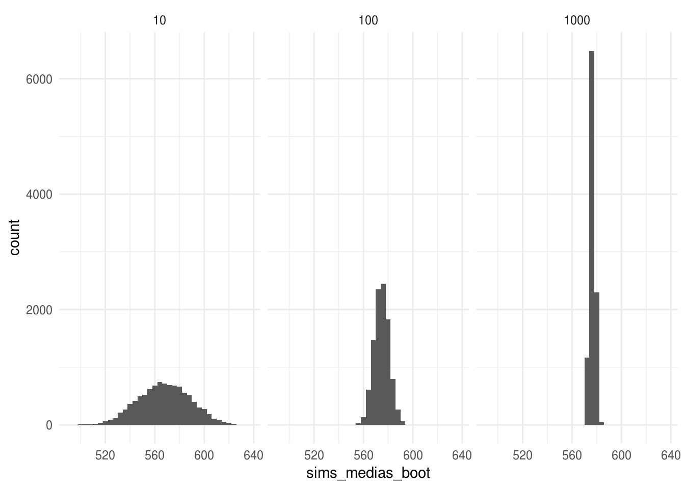

5-Bootstrap
- Distribución muestral. Consideramos la base de datos primaria,
y la columna de calificaciones de español 3o de primaria (
esp_3).
Selecciona una muestra de tamaño \(n = 10, 100, 200\). Para cada muestra calcula media y el error estándar de la media usando el principio del plug-in: \(\hat{\mu}=\bar{x}\), y \(\hat{se}(\bar{x})=\hat{\sigma}_{P_n}/\sqrt{n}\).
- Ahora aproximareos la distribución muestral, para cada tamaño de muestra \(n\):
- simula 10,000 muestras aleatorias, ii) calcula la media en cada muestra, iii) Realiza un histograma de la distribución muestral de las medias (las medias del paso anterior) iv) aproxima el error estándar calculando la desviación estándar de las medias del paso ii.
Calcula el error estándar de la media para cada tamaño de muestra usando la información poblacional (ésta no es una aproximación), usa la fórmula: \(se_P(\bar{x}) = \sigma_P/ \sqrt{n}\).
¿Cómo se comparan los errores estándar correspondientes a los distintos tamaños de muestra?
- Bootstrap correlación. Nuevamente trabaja con los datos
primaria, selecciona una muestra aleatoria de tamaño 100 y utiliza el principio del plug-in para estimar la correlación entre la calificación de \(y=\)español 3 y la de \(z=\)español 6: \(\hat{corr}(y,z)\). Usa bootstrap para calcular el error estándar de la estimación.
Solución
1. Distribución muestral
Suponemos que me interesa hacer inferencia del promedio de las calificaciones de los estudiantes de tercero de primaria en Ciudad de México.
En este ejercicio planteamos 3 escenarios (que simulamos): 1) que tengo una muestra de tamaño 10, 2) que tengo una muestra de tamaño 100, y 3) que tengo una muestra de tamaño 1000
- Selección de muestras:
library(tidyverse)
primarias <- readr::read_csv("https://raw.githubusercontent.com/tereom/est-computacional-2018/master/data/primarias.csv")
set.seed(373783326)
muestras <- data_frame(tamanos = c(10, 100, 1000)) %>%
mutate(muestras = map(tamanos, ~sample(primarias$esp_3, size = .)))Ahora procedemos de manera usual en estadística (usando fórmulas y no simulación), estimo la media de la muestra con el estimador plug-in \[\bar{x}={1/n\sum x_i}\] y el error estándar de \(\bar{x}\) con el estimador plug-in \[\hat{se}(\bar{x}) =\bigg\{\frac{1}{n^2}\sum_{i=1}^n(x_i-\bar{x})^2\bigg\}^{1/2}\]
- Estimadores plug-in:
se_plug_in <- function(x){
x_bar <- mean(x)
n_x <- length(x)
var_x <- 1 / n_x ^ 2 * sum((x - x_bar) ^ 2)
sqrt(var_x)
}
muestras_est <- muestras %>%
mutate(
medias = map_dbl(muestras, mean),
e_estandar_plug_in = map_dbl(muestras, se_plug_in)
)
muestras_est## # A tibble: 3 x 4
## tamanos muestras medias e_estandar_plug_in
## <dbl> <list> <dbl> <dbl>
## 1 10 <dbl [10]> 567. 21.1
## 2 100 <dbl [100]> 575. 6.11
## 3 1000 <dbl [1,000]> 576. 2.11Ahora, recordemos que la distribución muestral es la distribución de una
estadística, considerada como una variable aleatoria. Usando esta definción
podemos aproximarla, para cada tamaño de muestra, simulando:
1) simulamos muestras de tamaño \(n\) de la población,
2) calculamos la estadística de interés (en este caso \(\bar{x}\)),
3) vemos la distribución de la estadística a lo largo de simulaciones.
- Histogramas de distribución muestral y aproximación de errores estándar con simulación
muestras_sims <- muestras_est %>%
mutate(
sims_muestras = map(tamanos, ~rerun(10000, sample(primarias$esp_3,
size = ., replace = TRUE))),
sims_medias = map(sims_muestras, ~map_dbl(., mean)),
e_estandar_aprox = map_dbl(sims_medias, sd)
)
sims_medias <- muestras_sims %>%
select(tamanos, sims_medias) %>%
unnest(sims_medias)
ggplot(sims_medias, aes(x = sims_medias)) +
geom_histogram(binwidth = 2) +
facet_wrap(~tamanos, nrow = 1) +
theme_minimal()
Notamos que la variación en la distribución muestral decrece conforme aumenta el tamaño de muestra, esto es esperado pues el error estándar de una media es \(\sigma_P / \sqrt{n}\), y dado que en este ejemplo estamos calculando la media para la misma población el valor poblacional \(\sigma_P\) es constante y solo cambia el denominador.
Nuestros valores de error estándar con simulación están en la columna
e_estandar_aprox:
muestras_sims %>%
select(tamanos, medias, e_estandar_plug_in, e_estandar_aprox)## # A tibble: 3 x 4
## tamanos medias e_estandar_plug_in e_estandar_aprox
## <dbl> <dbl> <dbl> <dbl>
## 1 10 567. 21.1 21.0
## 2 100 575. 6.11 6.69
## 3 1000 576. 2.11 2.13En este ejercicio estamos simulando para examinar las distribuciones muestrales y para ver que podemos aproximar el error estándar de la media usando simulación; sin embargo, dado que en este caso hipotético conocemos la varianza poblacional y la fórmula del error estándar de una media, por lo que podemos calcular el verdadero error estándar para una muestra de cada tamaño.
- Calcula el error estándar de la media para cada tamaño de muestra usando la información poblacional:
muestras_sims_est <- muestras_sims %>%
mutate(e_estandar_pob = sd(primarias$esp_3) / sqrt(tamanos))
muestras_sims_est %>%
select(tamanos, e_estandar_plug_in, e_estandar_aprox, e_estandar_pob)## # A tibble: 3 x 4
## tamanos e_estandar_plug_in e_estandar_aprox e_estandar_pob
## <dbl> <dbl> <dbl> <dbl>
## 1 10 21.1 21.0 21.1
## 2 100 6.11 6.69 6.67
## 3 1000 2.11 2.13 2.11En la tabla de arriba podemos comparar los 3 errores estándar que calculamos, recordemos que de estos 3 el plug-in es el único que podríamos obtener en un escenario real pues los otros dos los calculamos usando la población.
Una alternativa al estimador plug-in del error estándar es usar bootstrap (en muchos casos no podemos calcular el error estándar plug-in por falta de fórmulas) pero podemos usar bootstrap: utilizamos una estimación de la distribución poblacional y calculamos el error estándar bootstrap usando simulación. Hacemos el mismo procedimiento que usamos para calcular e_estandar_apox pero sustituimos la distribución poblacional por la distriución empírica. Hagámoslo usando las muestras que sacamos en el primer paso:
muestras_sims_est_boot <- muestras_sims_est %>%
mutate(
sims_muestras_boot = map2(muestras, tamanos,
~rerun(10000, sample(.x, size = .y, replace = TRUE))),
sims_medias_boot = map(sims_muestras_boot, ~map_dbl(., mean)),
e_estandar_boot = map_dbl(sims_medias_boot, sd)
)
muestras_sims_est_boot## # A tibble: 3 x 11
## tamanos muestras medias e_estandar_plug… sims_muestras sims_medias
## <dbl> <list> <dbl> <dbl> <list> <list>
## 1 10 <dbl [1… 567. 21.1 <list [10,00… <dbl [10,0…
## 2 100 <dbl [1… 575. 6.11 <list [10,00… <dbl [10,0…
## 3 1000 <dbl [1… 576. 2.11 <list [10,00… <dbl [10,0…
## # ... with 5 more variables: e_estandar_aprox <dbl>, e_estandar_pob <dbl>,
## # sims_muestras_boot <list>, sims_medias_boot <list>,
## # e_estandar_boot <dbl>Graficamos los histogramas de la distribución bootstrap para cada muestra.
sims_medias_boot <- muestras_sims_est_boot %>%
select(tamanos, sims_medias_boot) %>%
unnest(sims_medias_boot)
ggplot(sims_medias_boot, aes(x = sims_medias_boot)) +
geom_histogram(binwidth = 4) +
facet_wrap(~tamanos, nrow = 1) +
theme_minimal()
Y la tabla con todos los errores estándar quedaría:
muestras_sims_est_boot %>%
select(tamanos, e_estandar_boot, e_estandar_plug_in, e_estandar_aprox,
e_estandar_pob)## # A tibble: 3 x 5
## tamanos e_estandar_boot e_estandar_plug… e_estandar_aprox e_estandar_pob
## <dbl> <dbl> <dbl> <dbl> <dbl>
## 1 10 21.3 21.1 21.0 21.1
## 2 100 6.11 6.11 6.69 6.67
## 3 1000 2.08 2.11 2.13 2.11Observamos que el estimador bootstrap del error estándar es muy similar al estimador plug-in del error estándar, esto es esperado pues se calcularon con la misma muestra y el error estándar bootstrap converge al plug-in conforme incrementamos el número de muestras bootstrap.
2. Correlación
- Bootstrap correlación. Nuevamente trabaja con los datos
primaria, selecciona una muestra aleatoria de tamaño 100 y utiliza el principio del plug-in para estimar la correlación entre la calificación de \(y=\)español 3 y la de \(z=\)español 6: \(\hat{corr}(y,z)\). Usa bootstrap para calcular el error estándar de la estimación.
- Selección de la muestra
set.seed(11729874)
muestra <- sample_n(primarias, size = 100)- Estimador de la correlación:
cor(muestra$esp_3, muestra$esp_6)## [1] 0.7760901- Error estándar con bootstrap
cor_rep <- function(){
muestra_boot <- sample_n(muestra, size = 100, replace = TRUE)
cor(muestra_boot$esp_3, muestra_boot$esp_6)
}
replicaciones <- rerun(10000, cor_rep()) %>% flatten_dbl()
sd(replicaciones)## [1] 0.04548587